The docs, restructured
Lesson 9, 2026-11-05. Before: a page per component (step 2, the day before), with no navigation that stayed, anatomy numbers over the stage's text, and the rules near the bottom. After: one shell on every page, modeled on Apple HIG and Primer (a sticky nav by role and family with a filter, "On this page", a small Light / Dark switch), and 11 family pages, each component a section in one order: what it's for, the live specimen, When to use / When not to side by side, the anatomy with its numbers in a gutter beside the stage, the other variants if any, states, then the technical details folded. The old per-component addresses redirect to their sections. Every shot: the top of the page or of the section, 1280 × 1500 and 390 × 1700. Live: design-system/docs/.
Not a look change: every stage on the family pages computes as the same stage on specimens.html, both themes, at 1280 and 390 (scripts/check_docs_stages.mjs, now in the build).
Race card · components/race-card.html → cards.html#race-card
Before, the facts came first and the rules last; the anatomy's numbers sat on the photo and the date. After, the nav shows where the card sits (Content → Cards), the rule and the anti-rule follow the specimen, and the numbers sit beside the stage.
1280
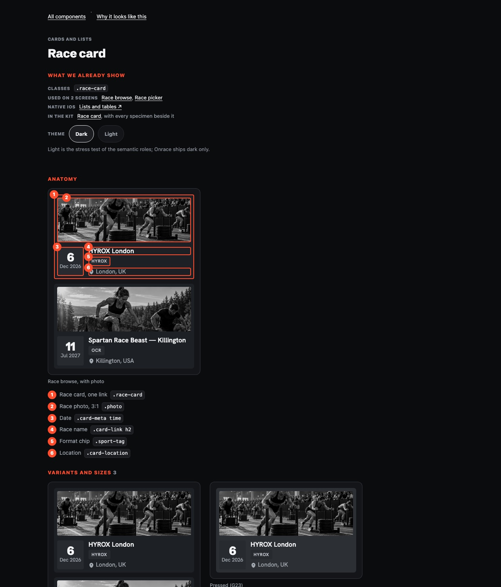
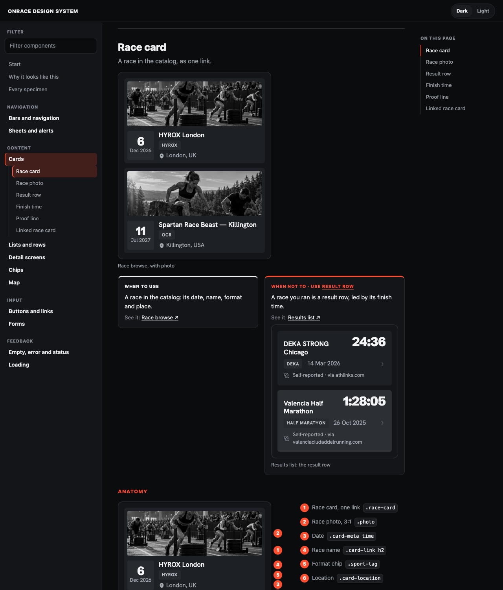
390
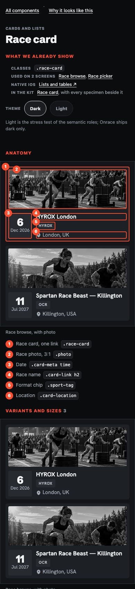
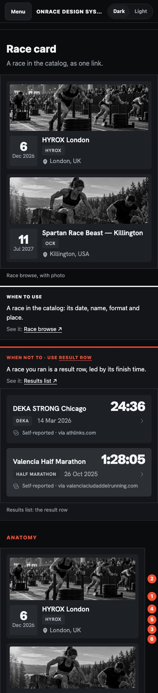
Form intro · components/form-intro.html → forms.html#form-intro
The page that was too granular: a whole page for one line. After, it's one section of Forms, between Date field and Form note, with "On this page" listing its neighbours.
1280
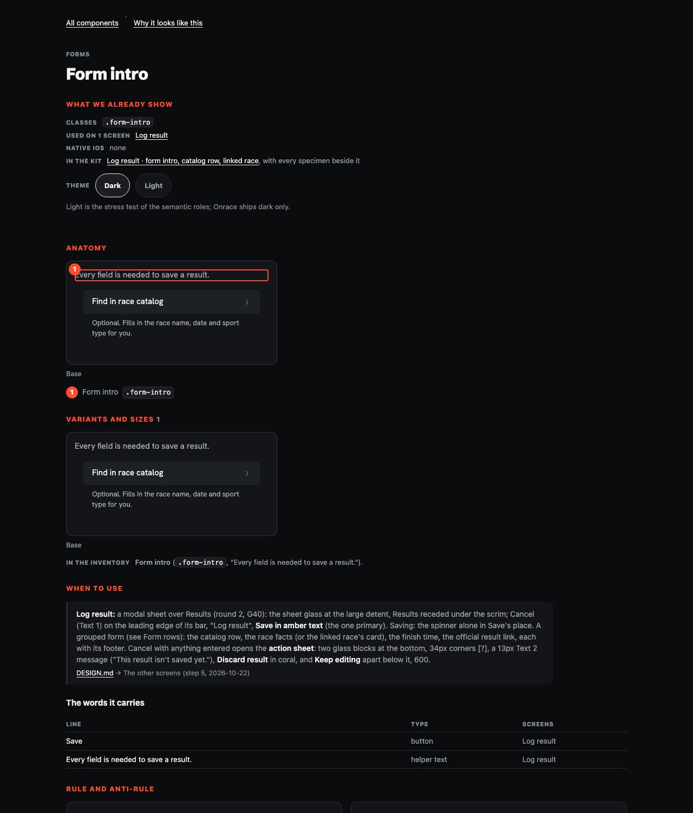
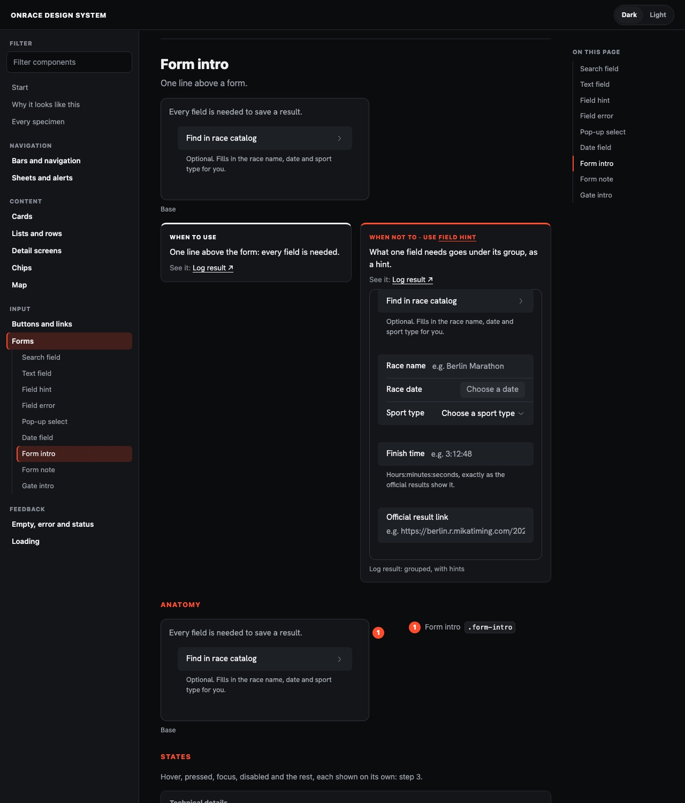
390
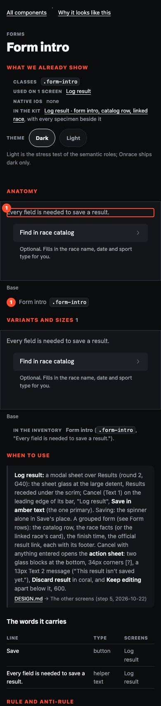
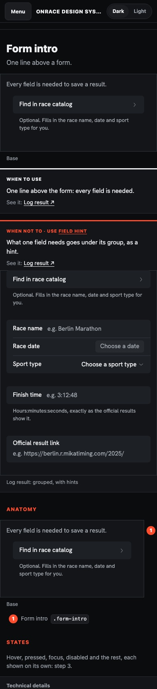
Gate layout · components/gate-layout.html → bars-and-navigation.html#gate-layout
The anatomy with the most parts on one line. Before, numbers 1 to 4 sat on top of Cancel, the title and Sign in. After, they sit in the gutter beside the bar, in order, and a legend item outlines its part while hovered or focused. The one variant is shown once: there's no Variants block.
1280
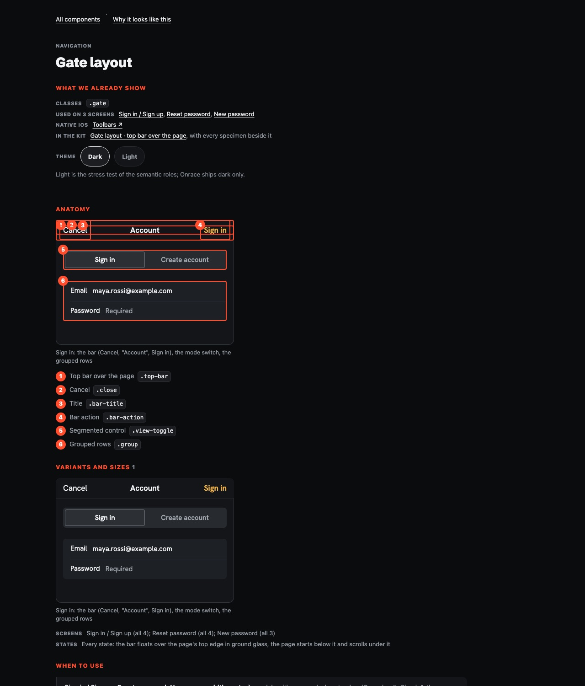
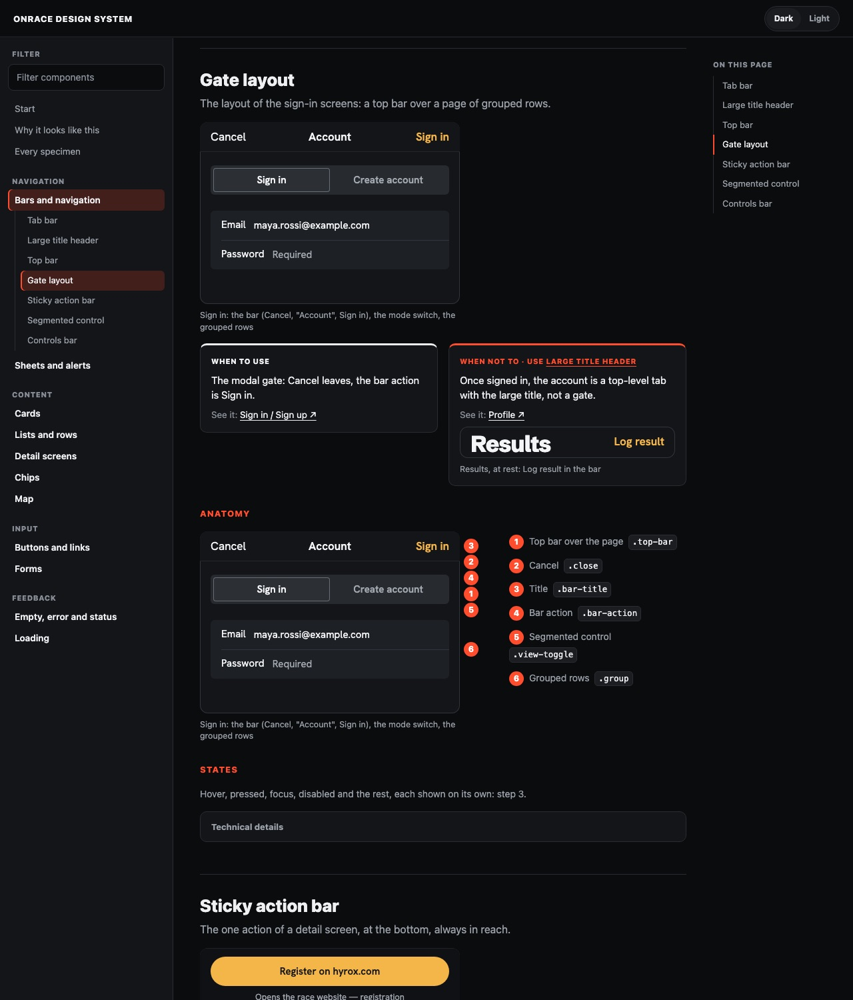
390
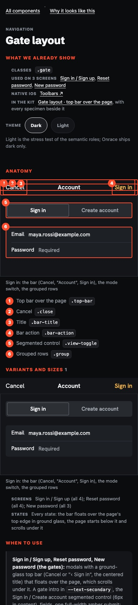
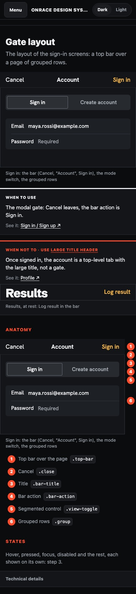